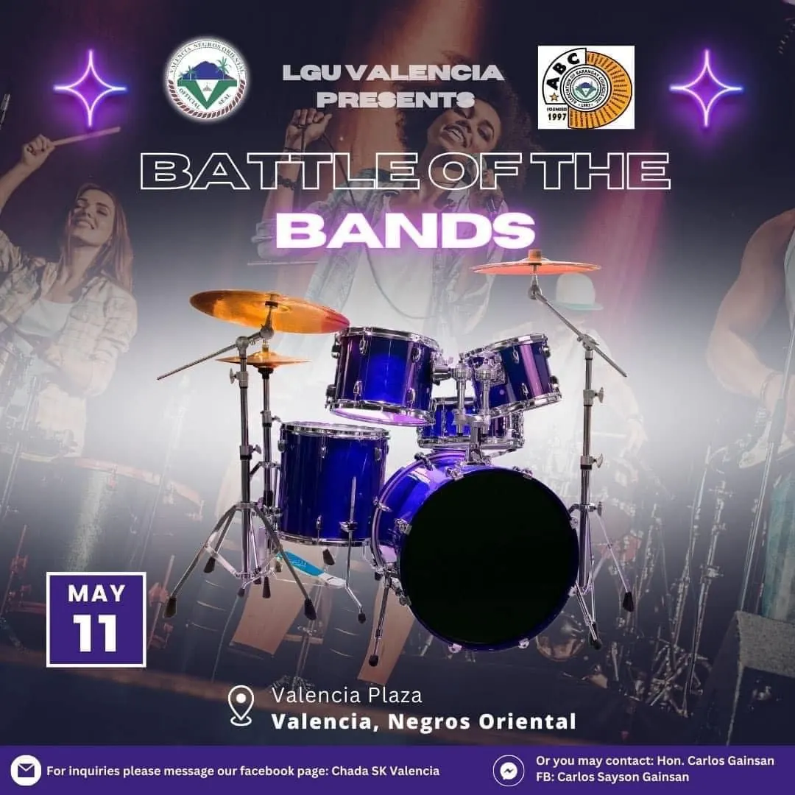
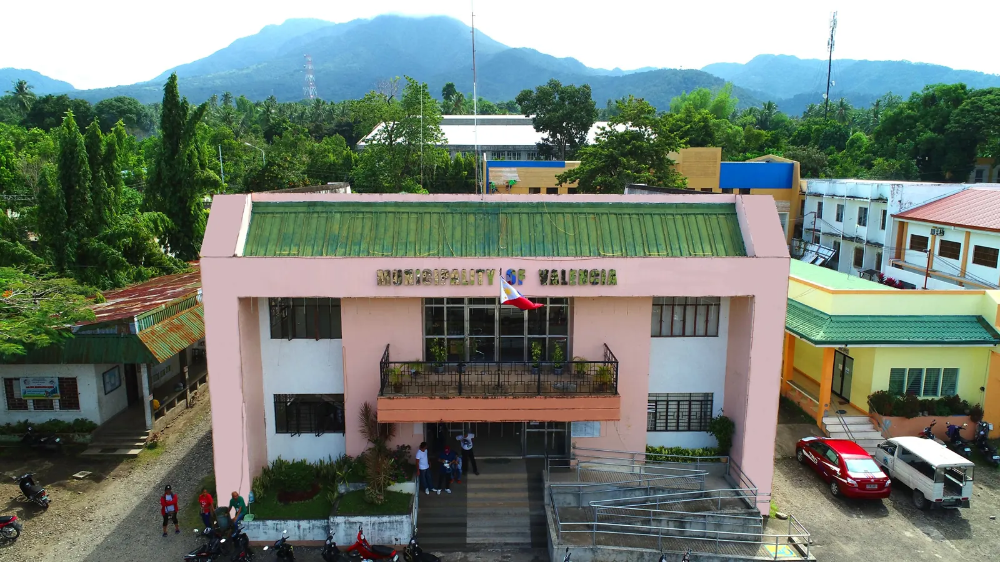
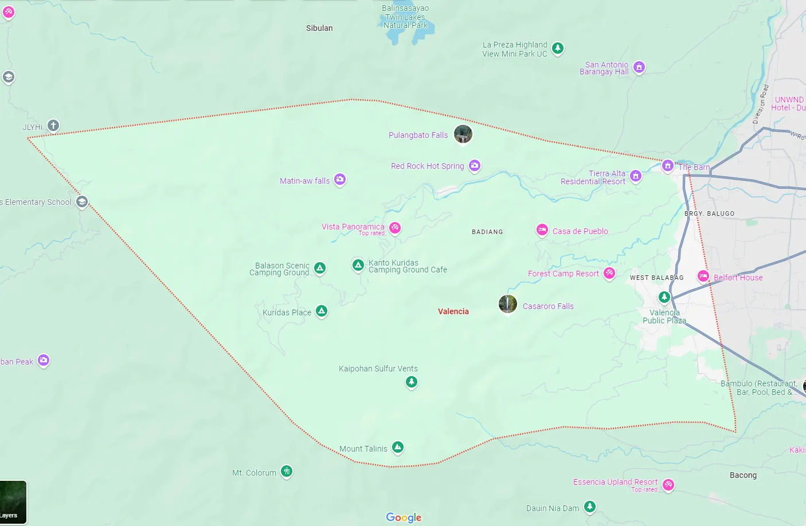

May 16, 2024
Chada Queen 2024
An evening of pageantry, celebration, and local pride at the Valencia Municipal Gymnasium.
Little Baguio of Negros Oriental
Experience waterfalls, mountain resorts, local food, and the warm culture of one of Negros Oriental’s most scenic towns.
Community updates
Featured announcements and events from Valencia tourism activities.
An evening of pageantry, celebration, and local pride at the Valencia Municipal Gymnasium.

Local performers gather for a night of music, energy, and community entertainment.
Dance crews showcase creativity and talent in one of the festival’s most exciting events.

About Valencia
Valencia is known for its relaxing climate, natural attractions, and easy access from Dumaguete City. It offers a peaceful mix of scenic destinations, local food, and community events.
The improved layout gives visitors a faster way to understand what Valencia offers without forcing them to scroll through cramped sections.
Find your way
Valencia is a short trip from Dumaguete and is commonly reached by local jeepney, tricycle, or private vehicle.
